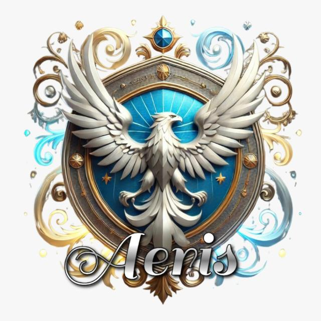
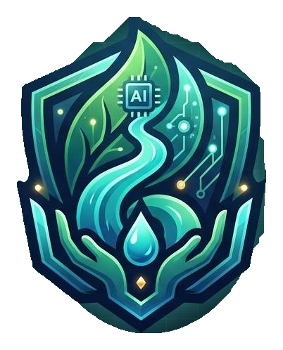
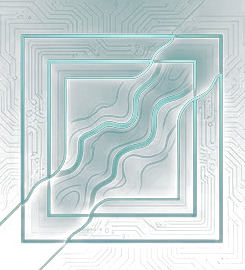
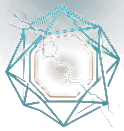
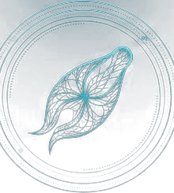

Mercury in fish
A study of bocachico and moncholo analyzed 160 fish and reported significantly higher methylmercury concentrations in exposed areas, with Bajo Cauca among the most affected.
Read the National University study ↗
Follow the evidence. Discover the mercury pathway. Protect the Cauca.

Choose a first name for your Guardian profile. It stays on this device — no account, no sign-up.
Explore the problem. Follow the evidence. Become a Guardian.
Use the map to jump directly to any part of the Guardian experience.
Start with the river and understand the context before entering the challenge.
The Cauca connects ecosystems, communities, wildlife, agriculture and cities. What happens to the water can matter far beyond one location.

Illegal mining can involve excavation, vegetation loss, increased sediment and, in some contexts, hazardous substances such as mercury.

A 2024 report described a mercury seizure in Caucasia.

A 2024 report described phytoremediation over 30 hectares in Caucasia.

A 2026 report described an operation against illegal mining in Caucasia.

Water connects places: upstream events can matter downstream.
Real photographs help turn an environmental issue into something visible.


In the Bajo Cauca region of Antioquia, gold mining has been an important source of mercury pollution. Studies in the Bajo Cauca River have found methylmercury concentrations in fish exposed to mining areas.

In aquatic environments, some mercury can be transformed into methylmercury. This form can build up in fish tissues and increase as it moves from one organism to another through the food web.


Three sources. Three ideas. Check the evidence before the challenge.
Official environmental reporting describes impacts from mining in the Bajo Cauca reaching connected water systems, while scientific research has measured methylmercury in fish from exposed areas.
A study of bocachico and moncholo analyzed 160 fish and reported significantly higher methylmercury concentrations in exposed areas, with Bajo Cauca among the most affected.
Read the National University study ↗MinAmbiente has documented how environmental impacts in Bajo Cauca can extend downstream through connected water systems and affect other regions.
Open the official report ↗In April 2026, the Commission of Guardians validated an action plan focused on ecosystem restoration, fisheries, community participation and sustainable livelihoods across the Cauca basin.
See the 2026 update ↗Start with the source: mining activity can introduce mercury into environmental systems. The exact pathway depends on local conditions.
Open the original scientific and official material behind the mission.
Follow the route, build your profile and unlock your Guardian legacy.
Five stages. One mission. Explore the territory, trace mercury, verify evidence, face the challenge, then choose your legacy.
Start by understanding why the Cauca River matters to ecosystems and communities.
Explore the chain from mining activity to fish — one step at a time.
Mining activityPotential mercury sourceWater & sedimentEnvironmental pathway
Food webSome mercury can become methylmercury.jpg?width=900) FishMethylmercury can accumulate in tissues
FishMethylmercury can accumulate in tissuesThis is a learning model, not a risk calculator. Species can differ in diet, habitat and exposure.
Feeds within aquatic food webs and can be exposed when methylmercury is present in its environment.
Drag the control to explore a conceptual transition toward a healthier river system.

At riskWater condition
VulnerableEcosystem responseThis visual shows a conceptual direction, not a numerical prediction. Real environmental recovery depends on local conditions, monitoring, restoration and sustained action.
Test the evidence. Earn energy. Unlock your Guardian legacy.
Your score is one part of the mission. Your choice shapes the ending.
Your mission continues with evidence, care and action.
Your progress stays on this device. Complete the experience and see your Guardian identity evolve.
RIVER ROOKIE
FIELD PROFILE · EVIDENCE FIRSTAsk questions about the Cauca River, Caucasia, illegal mining, mercury, fish and environmental protection.
Educational answers based on the topics covered in this project. The assistant uses the project educational context and an AI API when configured. It does not replace official scientific or government sources.
Use reliable information when talking about environmental problems.
Support restoration and protection of vegetation and waterways.
Verify dramatic environmental claims before sharing them.
Healthy rivers need informed people and responsible action.